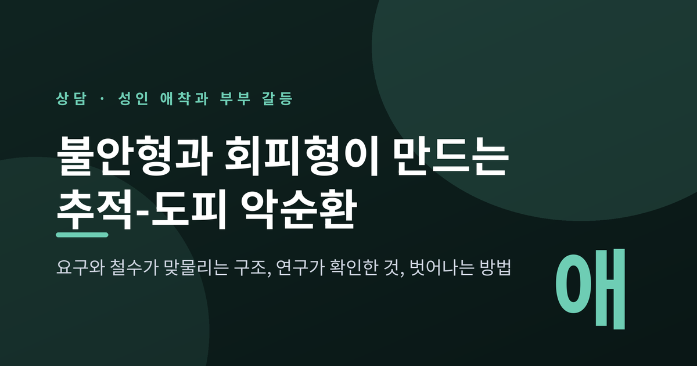
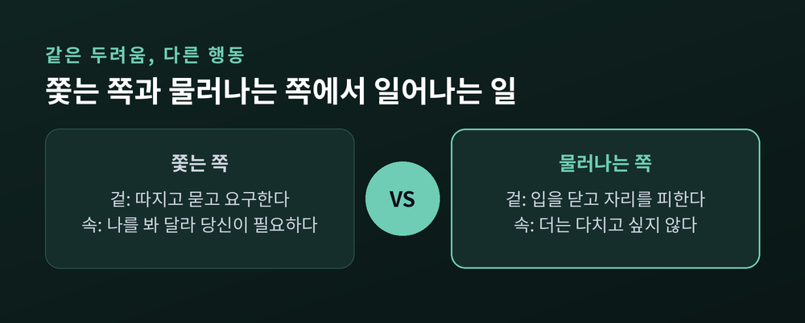
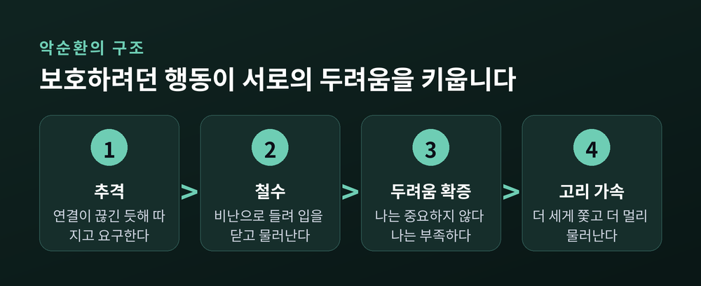
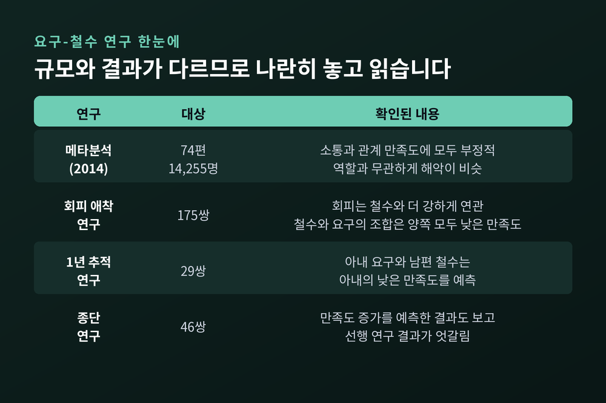
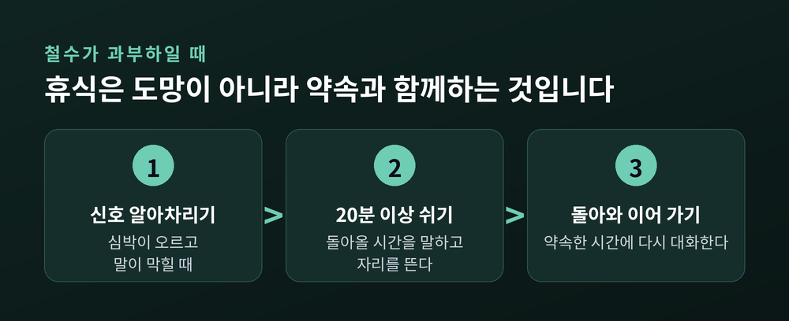
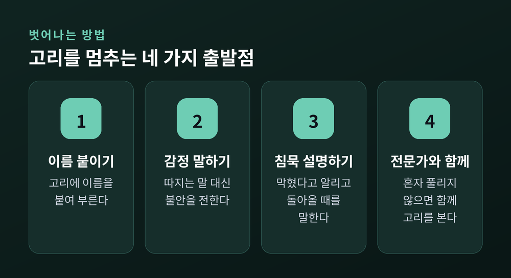

요구와 철수가 맞물리는 구조, 연구가 확인한 것, 고리에서 벗어나는 방법

오늘은 성인 애착 유형이 부부 갈등에서 어떤 모양으로 나타나는지 이야기해 보려 합니다. 한쪽이 따라붙고 다른 쪽이 물러서는 반복 패턴이 어떻게 굳어지는지, 연구가 무엇을 확인했는지, 어디서부터 멈출 수 있는지를 차례로 정리하겠습니다.
세 줄 요약
부부상담실에서 가장 자주 마주치는 장면은 큰 소리가 오가는 싸움이 아닙니다. 한 사람은 말을 쏟아내고, 한 사람은 점점 말수가 줄어드는 장면입니다.
쏟아내는 쪽은 이렇게 느낍니다. 이야기를 해도 닿지 않는다. 그래서 더 강하게 묻고, 더 크게 따집니다. 물러나는 쪽은 이렇게 느낍니다. 무슨 말을 해도 비난으로 돌아온다. 그래서 입을 닫고, 자리를 피하고, 일에 몰두합니다.
겉으로는 정반대의 행동입니다. 그러나 임상에서는 두 사람이 같은 것을 두려워한다고 봅니다. 추격하는 쪽의 속마음은 "나를 봐 달라, 당신이 필요하다"에 가깝고, 철수하는 쪽의 속마음은 "더는 다치고 싶지 않다"에 가깝습니다. 연결을 지키려는 마음이 한쪽에서는 요구로, 다른 쪽에서는 침묵으로 나타나는 셈입니다.

성인의 사랑을 애착으로 설명한 대표적 논문은 1987년 하잔과 셰이버의 연구입니다. 이들은 유아기 연구에서 나온 세 범주, 곧 안정·회피·불안-양가를 성인의 연애 관계에 적용했습니다. 근거로 든 개념은 볼비의 내적 작동 모델, 즉 나와 타인에 대해 마음속에 지닌 그림입니다.
당시 신문 설문에 응한 620명 가운데 안정형은 56%, 회피형은 25%, 불안-양가형은 19%였습니다. 대학생 108명을 대상으로 한 두 번째 연구에서도 56%, 23%, 20%로 비슷했습니다.
다만 이 숫자를 그대로 일반화하시면 곤란합니다. 첫 연구는 스스로 응답한 사람들의 자료였고, 한국 성인의 분포는 이번 정리에서 확인되지 않았습니다. 분류도 칸막이가 아니라 경향에 가깝습니다. 어느 한 유형으로 자신을 규정하기보다, 갈등이 깊어질 때 내가 어느 쪽으로 기우는지를 살피는 도구로 쓰시길 권합니다.
정서중심 부부치료의 설명을 빌리면, 반복되는 갈등은 두 사람 중 누군가의 결함이 아니라 두 사람이 함께 추는 하나의 춤입니다. 한 사람의 보호 행동이 상대의 가장 깊은 두려움을 건드리고, 건드려진 상대의 보호 행동이 다시 처음 사람의 두려움을 건드립니다.
추격자가 강하게 따지면, 철수자는 "나는 늘 부족한 사람"이라는 오래된 두려움을 확인합니다. 철수자가 물러서면, 추격자는 "나는 중요하지 않은 사람"이라는 두려움을 확인합니다. 보호하려던 행동이 정확히 상대를 더 아프게 만드는 구조입니다.

예전에는 이런 갈등을 대화 기술이 부족한 탓으로 돌리는 시각이 흔했습니다. 지금은 기술 이전에 유대의 안전함이 흔들렸다는 신호로 읽는 관점이 나란히 자리를 잡았습니다.
요구-철수 패턴은 오랫동안 연구되어 온 주제입니다. 확인된 내용을 좋은 소식과 아쉬운 소식으로 나눠 보겠습니다.
먼저 규모가 가장 큰 자료입니다. 2014년 『Communication Monographs』에 실린 메타분석은 120편 이상을 검토해 74편을 분석했고, 참가자는 14,255명이었습니다. 이 패턴은 주제 회피 같은 소통 결과와 정서적 거리, 전반적 관계 만족도 같은 관계 결과에 모두 부정적이었습니다. 이미 힘든 커플일수록 더 나빴고, 오래 지속될수록 되돌리기 어려웠습니다.
회피 애착만 따로 본 연구도 있습니다. 이성 커플 175쌍을 분석한 연구에서 회피 애착은 요구나 공격보다 철수 전략과 더 강하게 이어졌습니다. 한쪽의 철수와 상대의 요구가 맞물린 조합은 두 사람 모두의 낮은 관계 만족도와 연관되었습니다. 철수하는 사람만 만족도가 낮은 것이 아니라는 뜻입니다.

아쉬운 부분도 있습니다. 부부 29쌍을 1년간 추적한 연구에서는 아내가 요구하고 남편이 철수하는 패턴이 아내의 낮은 만족도를 예측했습니다. 그런데 46쌍의 종단연구는 요구-철수가 아내 만족도의 증가를 예측하는 결과도 보고했습니다. 선행 연구들이 낮은 수준 유지, 하락, 증가로 엇갈린다는 점을 저자도 인정합니다.
성별 문제도 갈립니다. 가트맨 연구소는 자신들의 실험실에서 관찰한 스톤월러의 85%가 남성이었다고 밝힙니다. 반면 메타분석은 어느 쪽이 요구하고 어느 쪽이 철수하든 해악이 비슷했다고 보고하며, 원인을 성 역할이나 성격 어느 쪽으로 돌릴지는 합의되지 않았다고 합니다.
정리하면 이렇습니다. 이 패턴이 대체로 관계에 해롭다는 쪽에 힘이 실려 있지만, 모든 경우에 같은 방향으로 작동한다고 단정하기는 어렵습니다. 그리고 불안형이 늘 추격하고 회피형이 늘 철수한다는 짝짓기 비율을 보여 주는 확인된 수치는 이번 자료에 없습니다. 주제에 따라 역할이 바뀌는 부부도 있습니다. 실제로 한 연구에서는 남편의 문제를 논의할 때는 부부 모두 비슷한 정도로 요구와 철수를 보였습니다.
물러서는 사람을 두고 냉정하다고 말하기 쉽습니다. 그러나 가트맨 연구소의 설명은 다릅니다. 스톤월링, 곧 상대를 차단하는 행동은 흔히 생리적 홍수 상태에서 나옵니다. 심박이 오르고 스트레스 호르몬이 분비되며 투쟁-도피 반응이 켜진 상태입니다.
이 상태에서는 대화를 이어 가기 어렵습니다. 침묵은 무관심이 아니라 과부하의 신호일 수 있다는 뜻입니다. 이때 권하는 것이 휴식입니다. 길이는 최소 20분. 몸이 가라앉는 데 그만큼 걸리기 때문입니다.
그런데 휴식에는 함정이 있습니다. 쫓는 사람에게 휴식은 버려짐으로 읽히기 쉽습니다. 그래서 자리를 뜨는 방식이 중요합니다. 말없이 사라지지 않고, 지금 몸이 한계라는 것과 돌아와 이어 가겠다는 약속을 함께 전하는 것입니다.

벗어나는 일은 상대를 고치는 데서 시작하지 않습니다. 고리를 문제로 보는 데서 시작합니다.
첫째, 패턴에 이름을 붙입니다. 싸움이 한창일 때 "우리 또 그 춤을 추고 있네요"라고 말할 수 있으면 반은 온 것입니다. 상대를 적으로 보던 자리에서 한 걸음 물러서게 해 줍니다.
둘째, 추격하는 쪽은 비난 밑의 감정을 말로 바꿉니다. "왜 맨날 그 모양이야"를 "요즘 당신이 멀게 느껴져서 불안해"로 바꾸는 연습입니다. 정서중심 치료에서는 이를 비난자 부드러워지기라 부르며, 성공적 치료 결과와 고리의 전환을 예측하는 사건으로 확인되었습니다.
셋째, 철수하는 쪽은 침묵을 설명으로 바꿉니다. 말이 막히면 막혔다고, 잠시 정리할 시간이 필요하다고 알립니다. 이것이 철수자 재관여의 첫걸음입니다.
넷째, 혼자 풀리지 않으면 전문가와 함께 고리를 봅니다. 부부 대상 정서중심 치료는 8회기에서 20회기의 단기 구조화 접근이며, 종합 메타분석에서 치료 종료 시점에 약 70%의 부부가 증상에서 벗어났다고 보고됩니다.

다만 한계도 분명히 적어 두겠습니다. 회피 쪽의 변화는 더디게 나타나는 편입니다. 추적 연구에서 애착 불안과 관계 만족도는 치료 후에도 계속 좋아졌지만, 회피는 같은 궤적을 따르지 않았습니다. 그러니 철수하는 배우자의 변화가 느리다고 서둘러 판단하지 마시길 바랍니다. 또 이 연구들은 대체로 북미와 유럽의 통제된 환경에서 이뤄졌고, 한국에서의 검증 자료는 확인되지 않았습니다.
폭력이 있는 관계는 별개의 문제입니다. 진행 중인 신체적 폭력이나 외도, 이미 이별을 결정한 경우는 이 접근이 설계된 범위를 벗어납니다. 이때는 부부상담보다 안전 확보가 먼저입니다.
끝으로 한 마디만 덧붙이겠습니다.
"추격과 도피는 정반대의 행동이 아니라, 같은 두려움이 입은 서로 다른 옷입니다."
이 사실을 안다고 해서 관계가 하루아침에 달라지지는 않습니다. 다만 상대의 침묵이나 날 선 말을 곧바로 나에 대한 공격으로 받지 않고, 그 밑의 두려움을 한 번 떠올릴 여유는 생깁니다. 그 여유가 고리를 늦추는 첫 번째 틈입니다.
이 글은 상담 이론과 연구에 대한 소개일 뿐, 자가 진단이나 자가 치료의 안내가 아닙니다. 지금 관계에서 반복되는 갈등으로 지치셨다면, 글의 틀에 상황을 맞춰 보기보다 전문 상담사나 정신건강 전문가와 직접 상의해 보시길 권합니다. 안전이 위협받는 상황이라면 더욱 그렇습니다.
이 고리를 정말 멈출 수 있느냐고 물으신다면, 쫓던 사람이 한 걸음 멈추고 물러서던 사람이 한 걸음 돌아선다면 가능하다고 답하겠습니다.